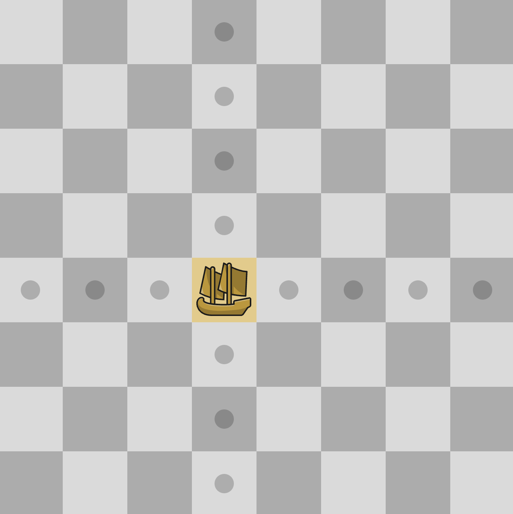
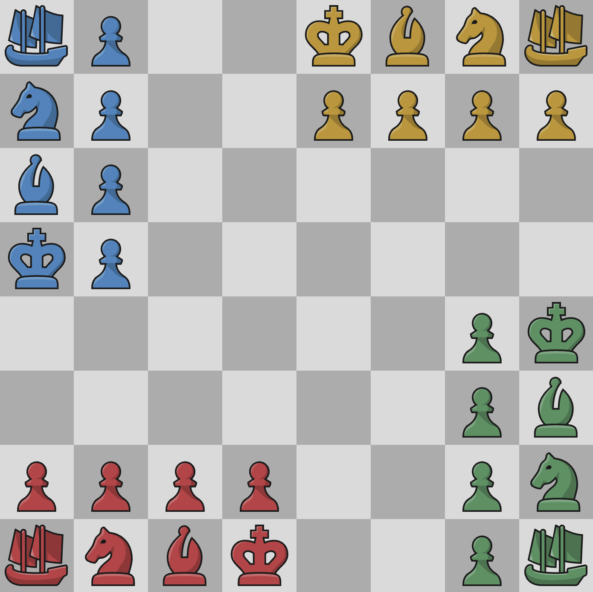

The players category features variants that let you play with more players. This variants in the category can also change the board, pieces, and goal.
| Variant Name | 4 Player Chess | Bughouse | Chaturaji |
|---|---|---|---|
| Game Length | Long | Normal | Long |
| Strategy | ★★★☆☆ | ★★★★☆ | ★★★☆☆ |
4 Player Chess
Rules
4 Player Chess is very similar to regular chess, but the board is bigger, and in a different shape. There is a regular 8x8 board in the middle, but the edges include 3 extra files/ranks that extend out. Then use a regular chess setup for each person. This is shown in the image to the right. Pawns are still able to promote, they just have to get to the complete opposite side of the board to do so. The last person standing wins.
Strategy
The strategy for 4 Player Chess is very similar to regular chess, there are just more pieces to look out for. Make sure you pay attention to the opponents pieces, especially the bishops and queens. You can also take advantage of opponents pieces. If somebody has a big pressure on another player, you can step in and apply more pressure, or even attack their king because they have their pieces somewhere else.
Bughouse
Rules
Setup
In this chess variant, there are two regularly set up chess boards, and two teams, each with two people. The one person plays against another person from another team, and then the other person from the first team plays against the other person on the other team. Basically Team 1 Player 1 vs T2P1, and T1P2 vs T2P2. Keep in mind that the color the players play as have to be the opposite of their teammate (ex. Player 1 = white, Player 2 = black). You should also make sure you have a little empty spot nearby for storing pieces.
Gameplay
For this variant, the rules are simple, but there is a lot to keep in mind. Every time you take a piece, you give it to your teammate and they "store" it somewhere. That teammate, during their turn, instead of moving a piece, can play one of their "stored" pieces. There are restrictions that come with this power though. You are not allowed to place a pawn on the 1st or 8th rank. You also can't put a piece on top of an already existing one. You are, however, allowed to place a piece to check, or even checkmate the opponent.
Strategy
The strategy for Bughouse is to coordinate with your teammate. Some games let your talk as much as you want, but others are on a time limit. Just keep in mind, if you need a piece, secretly ask your teammate for one. Don't let the other team know you need a queen, because then they'll avoid queen trades. There are so many sneaky checkmates and tactics you can perform with your "stored" pieces. A majority of these tactics involve sneaky pins by placing a bishop somewhere. Don't immediately play pieces when you get them, but make sure you use them. Try to find a good time and location to play each of your "stored" pieces.
Chaturaji
Rules
The rules are simple in Chaturaji. The main confusion would come from the new "boat" piece, but the "boat" just moves like a rook. You are not allowed to castle, move pawns twice on their first move, or en passant. Once a pawn reaches the rank/file furthest away from its starting position, it can promote to a boat, bishop, or knight. Pawns also move forwards away from the king. This means that each person will have pawns going in different directions, and it can get confusing at times. Pawns still capture diagonally in the direction they are moving.
Setup
The setup is shown in the image to the right. If you can't see the image, here is a quick explanation. Imagine each player has their own 2x4 grid of squares where their pieces will go. This "box" goes from a1 to d2. I will be giving all instructions relative to this "box". The boat is in the bottom left. To the right of the boat is the knight, and one more space to the right is the bishop. The king goes in the bottom right corner of your "box". Put one pawn above each of the four pieces to fill up the box. Now rotate the entire board 90 degrees and repeat this process three more times so that there are 4 people able to play the game.
Strategy
The strategy in Chaturaji is basically the same as 4 Player chess, just on a lesser scale. The kings are in vulnerable positions, so marching your pawns forward is highly recommended. I also really recommend saving your boat. Endgames in Chaturaji are not very exciting without boats, and it could get really hard to checkmate. Try to save all of your pieces, as trading them with another player could put you at a disadvantage.